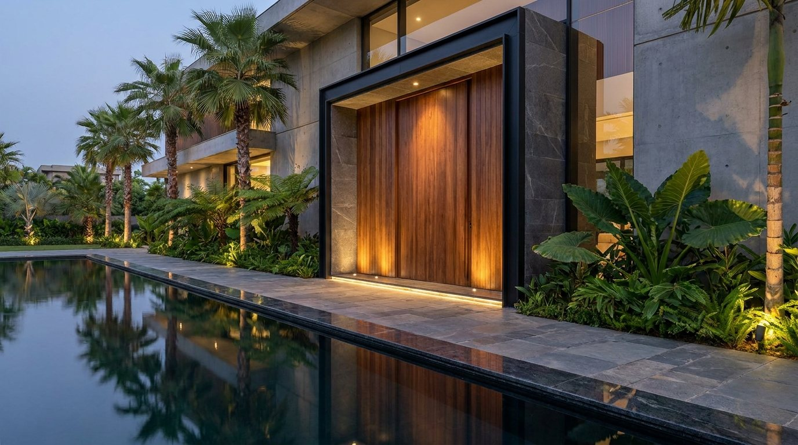

PUERTAS ARQUITECTÓNICAS
LÍNEA DE EXTERIOR · INFINITUM
La puerta que se convierte en arquitectura.
Un monumento a la belleza y a la imponencia, para oficinas, puntos de venta, hoteles y casas de lujo. Con 3 × 5 metros como medida de referencia, primero las calculamos, después las diseñamos, las fabricamos, las instalamos y las garantizamos.
PARA EMPRESAS Y PARA CASAS
Donde una gran puerta marca la diferencia.
Nuestro foco son las empresas: una entrada imponente es lo primero que ven el cliente y el equipo. Las casas de lujo, donde más se aprecia, completan la línea. Hemos instalado puertas de gran formato en residencias, algunas con más de cinco años de uso continuo, y cientos de puertas para oficinas y puntos de venta.
Oficinas y sedes corporativas
La primera puerta que cruzan clientes y equipo. Una entrada con presencia dice cómo trabaja la empresa.
Grandes locales y puntos de venta
Puertas de vidrio de piso a techo que abren el local a la calle y hacen de la vitrina un solo gesto.
Hoteles y centros comerciales
Accesos de doble altura con puertas de gran escala, para recibir con la imponencia de un edificio.
Restaurantes y concesionarios
Una puerta que se vuelve imagen de marca: madera, panel o vidrio, con iluminación integrada.
Clínicas y edificios institucionales
Puertas amplias, claras y de fácil operación, resueltas con la misma ingeniería.
Residencias de lujo
El acceso principal que anuncia la casa antes de entrar. Madera, vidrio o panel, a la medida del diseño.
NUESTRO NÚCLEO
Una gran puerta es ingeniería y diseño.
Para que una obra sea arquitectónica necesita ingeniería. Una puerta de gran formato no tiene un tamaño fijo: 3 × 5 metros es nuestra referencia, y cada proyecto puede pedir más o menos. Lo que sí se mantiene es la lógica. Cuanto más grande la hoja, más pesa, y ese peso viaja por los pivotes hasta la estructura del edificio. Por eso la puerta se piensa desde el inicio de la obra, junto con el proyecto estructural: se define el tamaño, el material y el peso, y se dejan calculados el dintel, los apoyos laterales y el piso donde se anclan los herrajes. Así la hoja gira con suavidad, permanece plana y estable con los años, y el diseño se construye tal como se dibujó.
DESDE EL INICIO DE LA OBRA
Lo que el proyecto estructural debe prever.
Estas son las recomendaciones que damos al arquitecto y al ingeniero estructural cuando el diseño incluye una puerta de gran formato.
El peso de la hoja
Se calcula con el tamaño y el material: madera maciza, vidrio, aluminio, panel o metal pesan distinto.
El dintel y la viga superior
Reciben el pivote superior y la carga horizontal. Se dimensionan antes de fundir.
El piso y la placa
Soportan el pivote inferior y todo el peso de la hoja. Se dejan reforzados y nivelados.
Los apoyos laterales
Columnas o muros rígidos que mantienen el marco a escuadra y limitan la deformación.
Las tolerancias y la dilatación
La madera, el aluminio y el vidrio se dilatan distinto. Se prevén holguras y sellos para cada material.
El ingreso a obra
Una hoja de este tamaño entra con grúa o con ruta definida. Se planea el izaje y la instalación.
MEDIDAS Y PESOS
El tamaño lo define el proyecto.
3 × 5 metros es nuestra medida de referencia. Una puerta puede ser mayor o menor, siempre que el peso, el material y la estructura del edificio se calculen juntos. El peso depende del material, y el herraje depende del peso.
Esbelta y alta
Entradas estrechas con la proporción de una columna.
Ancha y serena
Una hoja que abre como una pared, para vestíbulos y accesos principales.
La medida de referencia
Una hoja de quince metros cuadrados, diseñada y calculada a la medida de la obra.
| Material de la hoja | kg por m² | 2 × 5 m | 3 × 4 m | 3 × 5 m |
|---|---|---|---|---|
| Madera maciza (roble, 60 mm) | 45 | 450 | 540 | 675 |
| Madera enchapada sobre estructura (60 mm) | 35 | 350 | 420 | 525 |
| Vidrio laminado 8+8 con marco de aluminio | 48 | 480 | 575 | 720 |
| Vidrio laminado 10+10 con marco de aluminio | 58 | 580 | 695 | 870 |
| Aluminio compuesto 4 mm, dos caras, sobre estructura | 16 | 160 | 190 | 240 |
| Aluminio compuesto con lamas frontales de madera plástica | 26 | 260 | 310 | 390 |
| Acero 2 mm, dos caras, sobre estructura | 43 | 430 | 515 | 645 |
| Marco de acero con vidrio laminado 8+8 | 55 | 550 | 660 | 825 |
Pesos de referencia por hoja, en kilogramos, redondeados a 5 kg y con una variación de ±15 %. Supuestos: vidrio 2,5 kg/m² por milímetro, aluminio compuesto de 4 mm a 5,5 kg/m² por cara, roble a 750 kg/m³, acero a 7.850 kg/m³ y lamas huecas de madera plástica a 10 kg/m². El cálculo definitivo se hace con el proyecto.
INGENIERÍA
Lo que calculamos y construimos.
Peso y carga
Cada hoja se calcula por peso y por carga antes de fabricar, para que gire con la suavidad de una puerta común.
Pivote superior e inferior
Herrajes pivotantes de alta capacidad, ocultos en el marco y en el piso, dimensionados para la hoja.
Marco y refuerzos
Marco y refuerzos internos que mantienen la hoja plana y firme a lo largo del tiempo.
Agua, aire y viento
Perfiles, sellos y umbrales pensados para el exterior: lluvia, viento y clima agresivo.
Madera estable
Control de humedad y núcleo balanceado para que la madera se mantenga estable con los cambios de clima.
Instalación y garantía
Instalación por cuadrilla especializada y garantía de la puerta, con un solo responsable de principio a fin.
MATERIALES
Cada material cambia el peso y la ingeniería.
La madera no es la única opción. Elegimos el material por su comportamiento al sol, al agua y al paso del tiempo, y por el peso que la estructura puede recibir. La puerta puede acompañar la fachada o convertirse en su gesto principal.
Madera noble
Nogal, roble y otras maderas, macizas o enchapadas, con núcleo balanceado y acabados para exterior.
Vidrio y aluminio
Hojas de vidrio de piso a techo con perfilería de aluminio negro o bronce.
Aluminio compuesto y HPL
Hojas lisas en paneles de bajo mantenimiento, del mismo material de la fachada.
Madera plástica al frente
Lamas de madera plástica (WPC) sobre la hoja y el muro, para que la puerta continúe la fachada.
Acero y lámina metálica
Hojas en acero con acabado de pintura o de óxido controlado, y en lámina lisa o perforada.
Herrajes e iluminación
Manijas de gran longitud, cerraduras de alta seguridad e iluminación integrada al marco.
LOCALES COMERCIALES
Puertas de vidrio que abren el local a la calle.
El vidrio comercial más común en Colombia mide hasta 3,20 m de altura en una sola pieza, y con esa medida se diseña la puerta. Si el local pide más altura, se sube con un segundo vidrio sobre un travesaño horizontal. Ese travesaño deja de ser un detalle: se convierte en estructura y en diseño, y trabaja en conjunto con las puertas.


Imágenes ilustrativas de referencia. No son obras de Infinitum.
RESIDENCIAL
La puerta como monumento de la casa.
En una casa de lujo la puerta es la primera pieza de arquitectura que se toca. Madera noble, vidrio o panel, con lamas al frente o a ras del muro, y una escala que anuncia el diseño antes de entrar.


Imágenes ilustrativas de referencia. No son obras de Infinitum.
CATÁLOGO
Nueve modelos de referencia.
De la sede corporativa a la casa de lujo, en vidrio, madera, aluminio compuesto y acero. Cada modelo trae su medida, su peso y su herraje.


Imágenes ilustrativas de referencia de cada modelo. Las fotografías de obra de Infinitum se suman a medida que las producimos.
LÍNEA DE EXTERIOR
Una fachada con una gran puerta lo dice todo.
La puerta, la fachada y la pérgola se diseñan juntas, con los mismos materiales y el mismo estándar de obra, para que el exterior se lea como una sola pieza y con bajo costo de mantenimiento.
Pérgolas arquitectónicas
Sombra, protección de la lluvia y luz integrada para terrazas, restaurantes y accesos.
Puertas arquitectónicas
Hojas pivotantes de gran formato, calculadas desde el inicio de la obra.
PREGUNTAS FRECUENTES
Lo que preguntan arquitectos y propietarios.
¿Qué medidas hacen?
Nuestra medida de referencia es 3 × 5 metros, y una puerta puede ser mayor o menor. El tamaño se define con el proyecto estructural, según el peso, el material y la obra.
¿Cuándo hay que pensar en la puerta?
Desde el inicio de la obra. El peso de la hoja se calcula con el proyecto estructural, para dejar listos el dintel, los apoyos laterales y el piso donde se anclan los herrajes.
¿Cuánto pesa una puerta de gran formato?
Depende del material. Como referencia, una hoja de 3 × 4 metros pesa unos 190 kg en aluminio compuesto, unos 420 kg en madera enchapada y unos 575 kg en vidrio laminado. La tabla de pesos muestra cada material.
¿Solo se hacen en madera?
La madera es una opción. También hacemos hojas en vidrio y aluminio, aluminio compuesto, HPL, madera plástica al frente y acero o lámina metálica, solos o combinados.
¿Sirven para exterior?
Sí. Se diseñan para sol, lluvia y viento, con sellos, umbrales y acabados de exterior.
¿Dónde está disponible?
Esta línea está disponible en Colombia y en Latinoamérica.